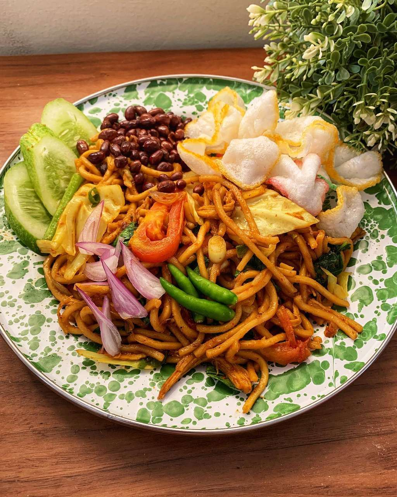

Resep yang anda cari ada di sini
- Home
- /
- Detail Resep

Resep Soto Padang
- 30 Menit
- 30.000
- Tanpa Babi
- Porsi 3-4 Orang
Cara Membuat
- Rebus daging sampai mendidih keluar buihnya, buah buih yang mengapung, masukkan semua bahan cemplung, lanjutkan merebus sampai daging empuk, masukan daun bawang, tunggu layu, matikan kompor, angkat daging, dan tunggu dingin.
- Panaskan minyak goreng, tumis bumbu halus sampai wangi, campur bumbu yang sudah ditumis ke dalam air rebusan daging, masak sebentar sampai bumbu dan kaldu menyatu. koreksi rasa.
- Iris tipis daging yang sudah direbus, kemudian goreng sampai garing.
- Tata sohun, daging didalam mangkok, siram dengan kuah soto, beri kerupuk, perkedel, seledri dan sambal.
Bahan - Bahan
- 500 gram daging sapi (campur dengan tulang).
- 2 liter air.
- Minyak goreng secukupnya.
- 4 lembar daun jeruk.
- 3 lembar daun salam.
- 8 kelopak bunga lawang.
- 2 batang sereh digeprek.
- 2 batang daun bawang diiris.
- 5 buah kapulaga.
- 5 buah cengkeh.
- 4 cm kayu manis.